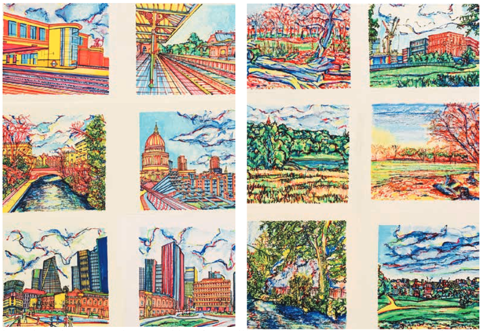

Traders forced to turn away customers as power cuts hit
Power cuts struck restaurant owners and traders in East Finchley last month, forcing them to turn away customers on one of their busiest weekends of the year.

What does ‘place’ mean to you?
As an art student at Middlesex University who has grown up in North London, I’m looking for volunteers to share their thoughts and experiences on the term ‘place’.
Traders forced to turn away customers as power cuts hit
As an art student at Middlesex University who has grown up in North London, I’m looking for volunteers to share their thoughts and experiences on the term ‘place’.